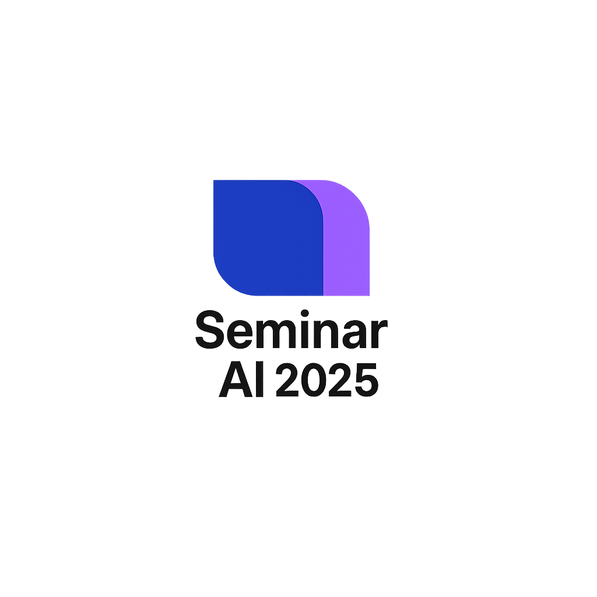

Seminar AI UNSOED 2025
Konferensi yang mempertemukan para praktisi, peneliti, dan pengambil keputusan untuk membahas perkembangan dan implementasi AI di Indonesia.
Seminar ini dirancang untuk memberikan wawasan mendalam tentang bagaimana AI mengubah berbagai sektor kehidupan, mulai dari pendidikan, kesehatan, bisnis. Kami menghadirkan para ahli terkemuka yang akan berbagi pengalaman dan visi mereka tentang masa depan AI di Indonesia.

Agenda Acara
Registrasi Peserta
Pembukaan & Sambutan
Masa Depan AI dalam Kehidupan Sehari-hari
Break
Panel Discussion & Q&A
Penutupan
Topik Pembahasan
AI dalam Kehidupan Sehari-hari
Bagaimana AI mengubah cara kita bekerja, belajar, dan berinteraksi setiap hari.
Keamanan & Etika AI
Tantangan keamanan data dan pertimbangan etis dalam implementasi AI.
AI untuk Bisnis
Strategi implementasi AI untuk meningkatkan efisiensi dan inovasi bisnis.
AI dalam Kesehatan
Revolusi pelayanan kesehatan melalui teknologi AI dan machine learning.
AI untuk Pendidikan
Transformasi metode pembelajaran dengan bantuan kecerdasan buatan.
Masa Depan AI
Prediksi dan tren perkembangan AI dalam 5-10 tahun ke depan.